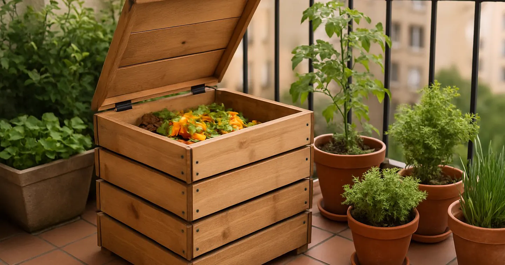
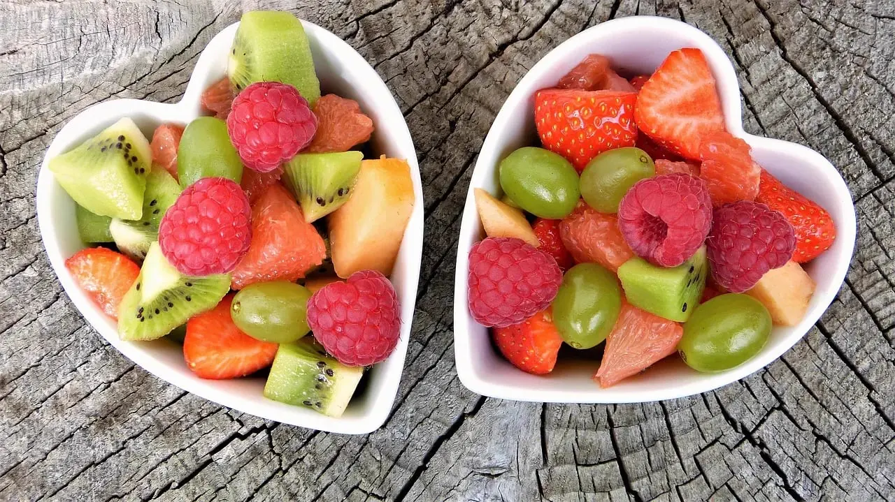
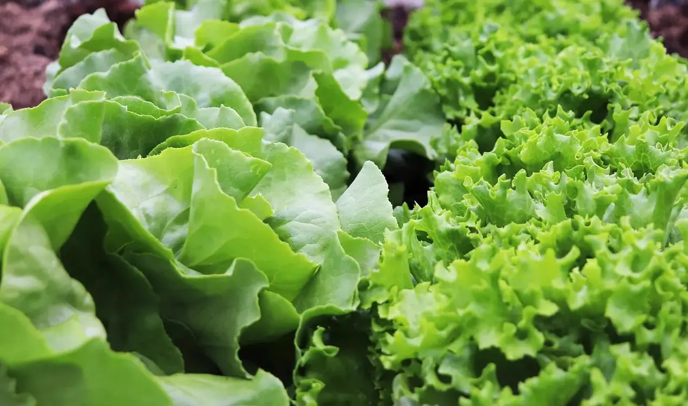
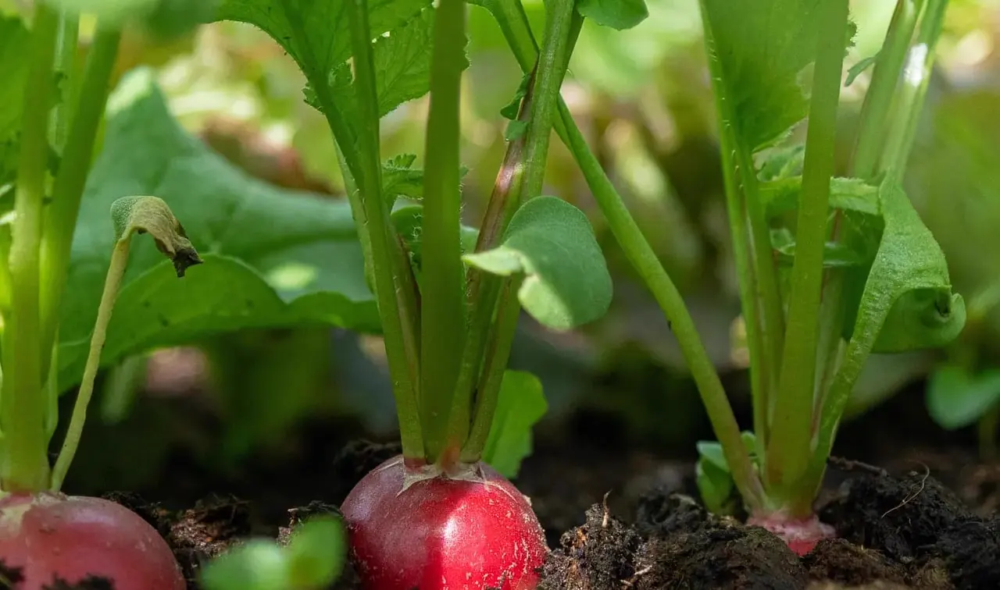
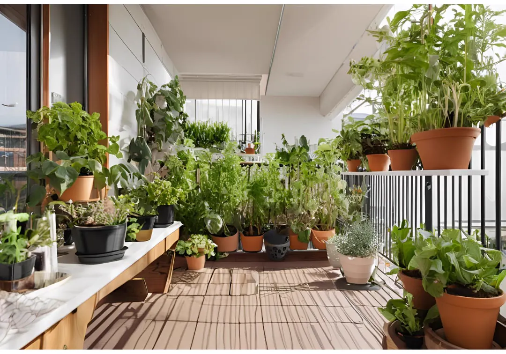
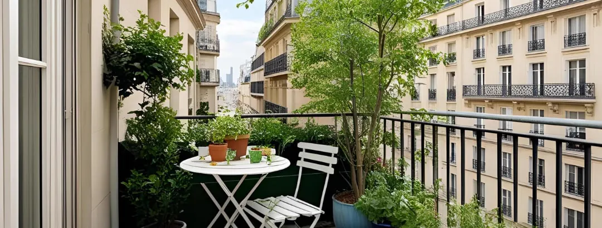

Son approche
Elle privilégie les essais progressifs, les variétés tolérantes et les conseils applicables sur quelques mètres carrés. Ses guides cherchent surtout à rendre le jardinage urbain plus clair, plus doux et moins intimidant.

Matériel jardin balcon : pots adaptés, terreau, arrosoir, outils et accessoires vraiment utiles pour commencer un potager en pot sans encombrer l’espace.

Voile léger, canisse, déplacement des pots et bons horaires : comment ombrer un balcon en été sans étouffer les plantes ni bloquer toute la lumière.

Un pot à part, une terre fraîche et des coupes régulières : la méthode simple pour garder une menthe dense sans qu’elle prenne toute la place.

Calendrier jardin balcon mois par mois : semis, plantations, arrosage, paillage, récoltes et protections pour organiser un potager en pot toute l’année.
Calendrier lunaire balcon : comment organiser semis, plantations, entretien et récoltes en pot avec la lune, sans oublier exposition, arrosage et saison.

Arroser ses plantes de balcon pendant les vacances : autonomie des pots, gestes avant départ et solutions simples pour 2 jours, une semaine ou plus...

Utiliser du compost en pot : dosages simples, plantes qui aiment ça et erreurs à éviter pour nourrir sans excès.

Bouturer du basilic sur un balcon : choisir la bonne tige, faire raciner dans l’eau ou en pot, puis replanter sans casser la reprise.

Compost en petit espace : lombricomposteur, bokashi, mini composteur ou solution sans vers. Le guide simple pour composter sans odeur.

Fraises en pot : variétés faciles, bon contenant, arrosage, paillage et stolons. Les repères simples pour récolter même quand on débute.

Tomates en pot : quelle variété choisir, quel contenant prévoir, quand planter et comment arroser sans multiplier les erreurs.

Épinards en pot : quand semer, quel contenant choisir, où les placer et comment éviter la montée en graines. Un guide simple pour récolter longtemps.

Pucerons, cochenilles, limaces ou aleurodes sur balcon : les gestes simples pour limiter les dégâts sans pesticides et garder des plantes plus résistantes.

Poivrons en pot : variété compacte, grand pot, chaleur, arrosage régulier et nouaison. Le guide simple pour réussir sans serre ni jardin.

Tomates cerises en pot : variété facile, contenant de 20 à 30 L, soleil, arrosage et taille légère. Les bons repères pour récolter tout l’été.

Chaleur, pot drainé, arrosage au bon rythme et pincements réguliers : les gestes qui gardent le basilic dense, parfumé et facile à récolter.

Que planter en mai en pots : tomates cerises, basilic, poivrons, haricots nains, fleurs utiles et derniers semis faciles quand les nuits deviennent...

Petits fruits en pot sur balcon : fraisiers, framboisiers nains, myrtilles, groseilliers et cassissiers. Le guide pour récolter des fruits même en...

Lumière douce, arrosage régulier, semis échelonnés : comment garder des salades tendres en pot même sur un petit balcon.

Un bac peu profond, un terreau fin et une humidité régulière suffisent souvent pour récolter des radis croquants sans occuper beaucoup de place.

Découvrez comment créer un jardinage en lasagnes sur balcon pour un potager fertile, écologique et simple, même en ville avec peu d’espace. A vous de...

Plantes qui survivent à la canicule : découvrez les espèces résistantes à la chaleur pour un balcon fleuri et productif tout l’été, même par forte chaleur.

Découvrez les meilleures plantes grimpantes pour créer de l'intimité en ville. Apprenez à choisir et entretenir des plantes grimpantes adaptées à votre...

Découvrez comment cultiver facilement des fleurs comestibles et mellifères sur votre balcon pour un jardin gourmand, écologique, et un véritable refuge...

Plantes idéales pour un balcon durable : résistantes, écologiques et faciles à entretenir pour un jardin urbain éco-responsable, fleuri et accueillant....

Découvrez nos 10 astuces pour démarrer un jardin sur balcon : cultivez facilement un potager balcon, des plantes en pot et créez un espace vert urbain...

Évitez les erreurs courantes pour jardiner sur un balcon : optimisez votre espace, cultivez un potager sur votre balcon et réussissez vos plantations...